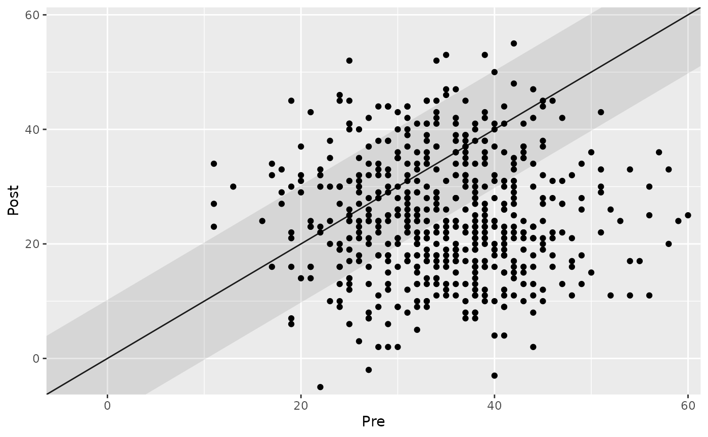
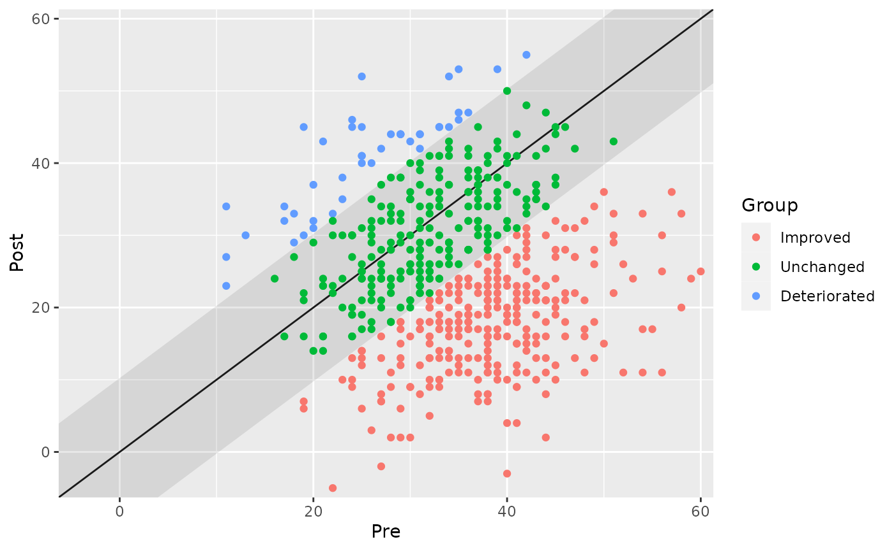
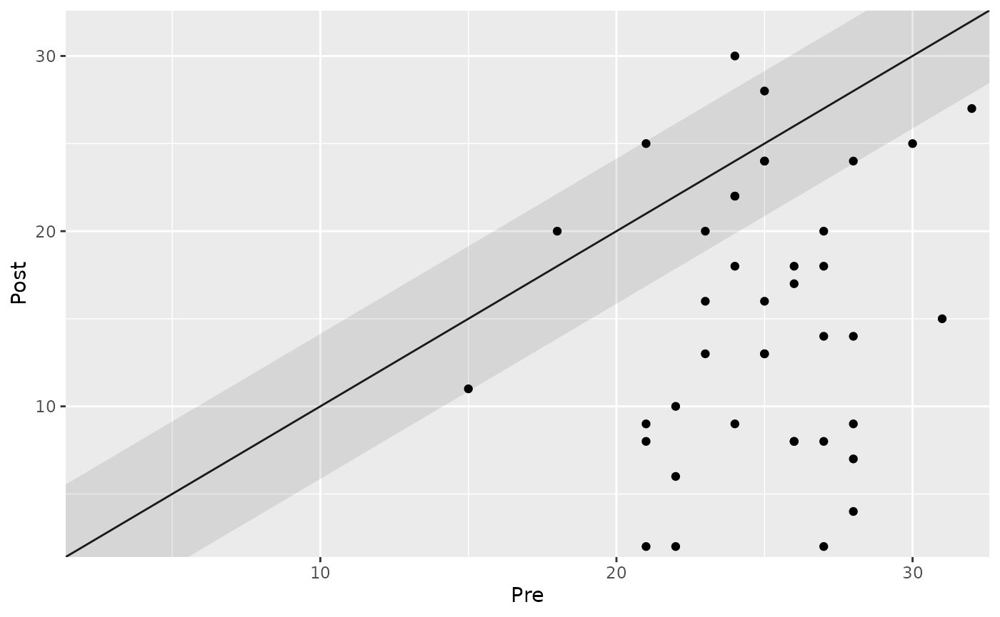
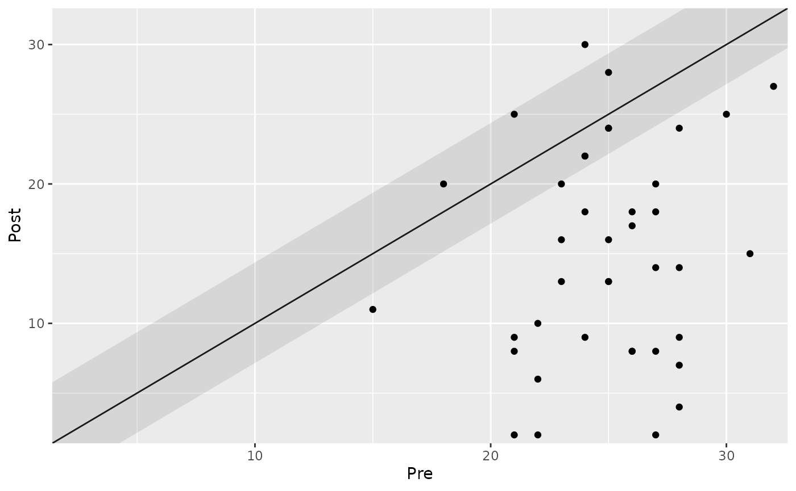
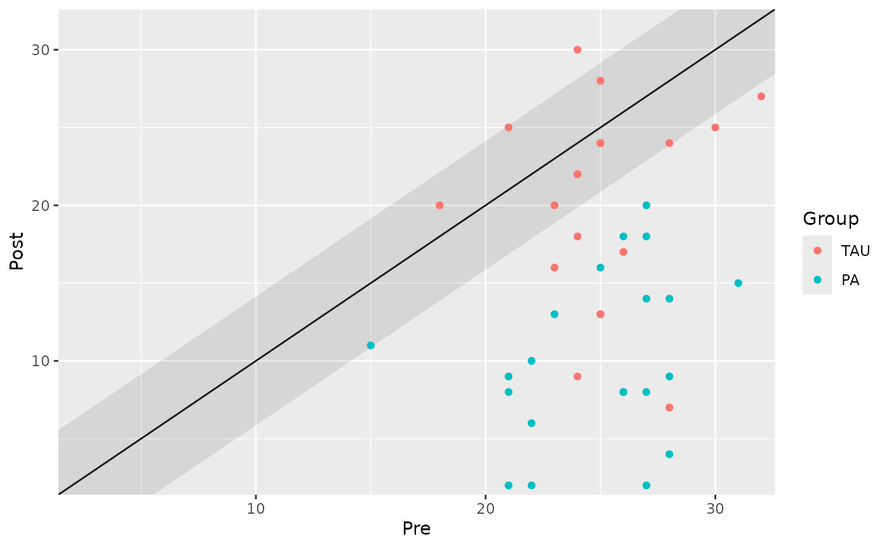
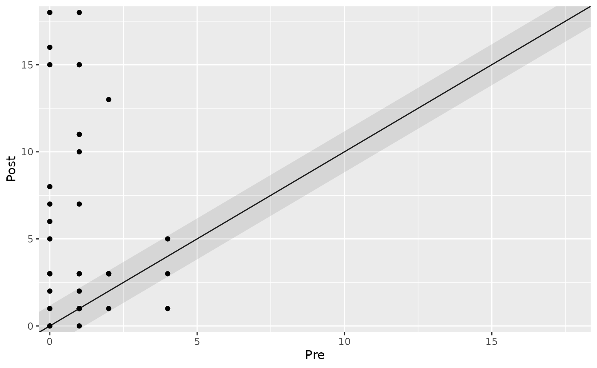
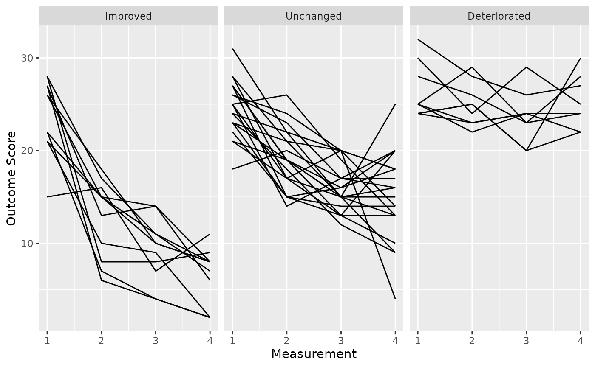

Distribution-Based Approach
Source:vignettes/distribution-based-approach.Rmd
distribution-based-approach.RmdIntroduction
In this tutorial, we will explore the percentage-change approach to
clinical significance using R. This approach is commonly used in
clinical research to assess the meaningfulness of change in patient
outcomes. We will be working with the claus_2020 dataset
and the cs_percentage() function to demonstrate various
aspects of these approaches.
Prerequisites
Before we begin, ensure that you have the following prerequisites in place:
- R installed on your computer.
- Basic understanding of R programming concepts.
Looking at the Datasets
First, let’s have a look at the datasets, which come with the package.
library(clinicalsignificance)
antidepressants
#> # A tibble: 1,110 × 4
#> patient condition measurement mom_di
#> <chr> <fct> <fct> <dbl>
#> 1 S001 Wait List Before 50
#> 2 S001 Wait List After 36
#> 3 S002 Wait List Before 40
#> 4 S002 Wait List After 32
#> 5 S003 Wait List Before 38
#> 6 S003 Wait List After 41
#> 7 S004 Wait List Before 29
#> 8 S004 Wait List After 44
#> 9 S005 Wait List Before 37
#> 10 S005 Wait List After 45
#> # ℹ 1,100 more rows
claus_2020
#> # A tibble: 172 × 9
#> id age sex treatment time bdi shaps who hamd
#> <dbl> <dbl> <fct> <fct> <dbl> <dbl> <dbl> <dbl> <dbl>
#> 1 1 54 Male TAU 1 33 9 0 25
#> 2 1 54 Male TAU 2 28 6 3 17
#> 3 1 54 Male TAU 3 28 9 7 13
#> 4 1 54 Male TAU 4 27 8 3 13
#> 5 2 52 Female PA 1 26 11 2 15
#> 6 2 52 Female PA 2 26 10 0 16
#> 7 2 52 Female PA 3 25 10 0 7
#> 8 2 52 Female PA 4 19 9 3 11
#> 9 3 54 Male PA 1 15 2 0 28
#> 10 3 54 Male PA 2 13 5 9 17
#> # ℹ 162 more rowsDistribution-Based Approach
The cs_distribution() function allows us to analyze the
clinical significance by considering the distribution of patient
measurements. We can specify various parameters to customize the
analysis. Let’s explore the key aspects of this function through
examples.
Basic Analysis
Let’s start with a basic clinical significance distribution analysis
using the antidepressants dataset. We are interested in the
Mind over Mood Depression Inventory (mom_di) measurements
and want to set a reliability threshold of 0.80.
# Basic clinical significance distribution analysis
antidepressants |>
cs_distribution(patient, measurement, mom_di, reliability = 0.80)
#> ℹ Your "Before" was set as pre measurement and and your "After" as post.
#>
#> ── Clinical Significance Results ──
#>
#> Distribution-based approach using the JT method.
#> • If that is not correct, please specify the pre measurement with the argument
#> "pre".
#> Category | n | Percent
#> ----------------------------
#> Improved | 274 | 0.49
#> Unchanged | 237 | 0.43
#> Deteriorated | 44 | 0.08Handling Warnings
Sometimes, you may encounter warnings when using this function. You can turn off the warning by explicitly specifying the pre-measurement time point using the pre parameter. This can be helpful when your data lacks clear pre-post measurement labels.
# Turning off the warning by specifying pre-measurement time
cs_results <- antidepressants |>
cs_distribution(
patient,
measurement,
mom_di,
pre = "Before",
reliability = 0.80
)Summarize and plot the results
summary(cs_results)
#>
#> ── Clinical Significance Results ──
#>
#> Distribution-based analysis of clinical significance using the JT method for
#> calculating the RCI.
#> There were 555 participants in the whole dataset of which 555 (100%) could be
#> included in the analysis.
#> The outcome was mom_di and the reliability was set to 0.8.
#>
#> ── Individual Level Results
#> Category | n | Percent
#> ----------------------------
#> Improved | 274 | 0.49
#> Unchanged | 237 | 0.43
#> Deteriorated | 44 | 0.08
plot(cs_results)
plot(cs_results, show = category)
Data with More Than Two Measurements
When working with data that has more than two measurements, you must explicitly define the pre and post measurement time points using the pre and post parameters.
# Clinical significance distribution analysis with more than two measurements
cs_results <- claus_2020 |>
cs_distribution(
id,
time,
hamd,
pre = 1,
post = 4,
reliability = 0.80
)
# Display the results
cs_results
#>
#> ── Clinical Significance Results ──
#>
#> Distribution-based approach using the JT method.
#> Category | n | Percent
#> ---------------------------
#> Improved | 29 | 0.72
#> Unchanged | 10 | 0.25
#> Deteriorated | 1 | 0.03
summary(cs_results)
#>
#> ── Clinical Significance Results ──
#>
#> Distribution-based analysis of clinical significance using the JT method for
#> calculating the RCI.
#> There were 43 participants in the whole dataset of which 40 (93%) could be
#> included in the analysis.
#> The outcome was hamd and the reliability was set to 0.8.
#>
#> ── Individual Level Results
#> Category | n | Percent
#> ---------------------------
#> Improved | 29 | 0.72
#> Unchanged | 10 | 0.25
#> Deteriorated | 1 | 0.03
plot(cs_results)
Changing the RCI Method
You can change the Reliable Change Index (RCI) method by specifying
the rci_method parameter. In this example, we use the “HA”
method.
# Clinical significance distribution analysis with a different RCI method
cs_results_ha <- claus_2020 |>
cs_distribution(
id,
time,
hamd,
pre = 1,
post = 4,
reliability = 0.80,
rci_method = "HA"
)
# Display the results
summary(cs_results_ha)
#>
#> ── Clinical Significance Results ──
#>
#> Distribution-based analysis of clinical significance using the HA method for
#> calculating the RCI.
#> There were 43 participants in the whole dataset of which 40 (93%) could be
#> included in the analysis.
#> The outcome was hamd and the reliability was set to 0.8.
#>
#> ── Individual Level Results
#> Category | n | Percent
#> ---------------------------
#> Improved | 32 | 0.80
#> Unchanged | 7 | 0.17
#> Deteriorated | 1 | 0.03
plot(cs_results_ha)
Grouped Analysis
You can also perform a grouped analysis by providing a grouping variable. This is useful when comparing different treatment groups or categories.
# Grouped analysis
cs_results_grouped <- claus_2020 |>
cs_distribution(
id,
time,
hamd,
pre = 1,
post = 4,
group = treatment,
reliability = 0.80
)
# Display the results
summary(cs_results_grouped)
#>
#> ── Clinical Significance Results ──
#>
#> Distribution-based analysis of clinical significance using the JT method for
#> calculating the RCI.
#> There were 43 participants in the whole dataset of which 40 (93%) could be
#> included in the analysis.
#> The outcome was hamd and the reliability was set to 0.8.
#>
#> ── Individual Level Results
#> Group | Category | n | Percent
#> -----------------------------------
#> TAU | Improved | 9 | 0.23
#> TAU | Unchanged | 9 | 0.23
#> TAU | Deteriorated | 1 | 0.03
#> PA | Improved | 20 | 0.50
#> PA | Unchanged | 1 | 0.03
#> PA | Deteriorated | 0 | 0.00
plot(cs_results_grouped)
Analyzing Positive Outcomes
In some cases, higher values of an outcome may be considered better.
You can specify this using the better_is argument. Let’s
see an example with the WHO-5 score where higher values are considered
better. Suppose the reliability for the WHO-5 is 0.85.
distribution_results_who <- claus_2020 |>
cs_distribution(
id = id,
time = time,
outcome = who,
pre = 1,
post = 4,
reliability = 0.85,
better_is = "higher"
)
distribution_results_who
#>
#> ── Clinical Significance Results ──
#>
#> Distribution-based approach using the JT method.
#> Category | n | Percent
#> ---------------------------
#> Improved | 21 | 0.53
#> Unchanged | 18 | 0.45
#> Deteriorated | 1 | 0.03
# And plot the groups
plot(distribution_results_who)
Using More Than Two Measurements with HLM Method
If you have more than two measurements and want to use the
Hierarchical Linear Modeling (HLM) method, you can specify the
rci_method argument accordingly.
# Clinical significance distribution analysis with HLM method
cs_results_hlm <- claus_2020 |>
cs_distribution(
id,
time,
hamd,
rci_method = "HLM"
)
# Display the results
summary(cs_results_hlm)
#>
#> ── Clinical Significance Results ──
#>
#> Distribution-based analysis of clinical significance using the HLM method for
#> calculating the RCI.
#> There were 43 participants in the whole dataset of which 40 (93%) could be
#> included in the analysis.
#> The outcome was hamd.
#>
#> ── Individual Level Results
#> Category | n | Percent
#> ---------------------------
#> Improved | 11 | 0.28
#> Unchanged | 20 | 0.50
#> Deteriorated | 9 | 0.23
plot(cs_results_hlm)
Conclusion
In this tutorial, you’ve learned how to perform clinical significance distribution analysis using the cs_distribution function in R. This analysis is valuable for understanding the practical significance of changes in patient measurements. By customizing parameters and considering group-level analysis, you can gain valuable insights for healthcare and clinical research applications.